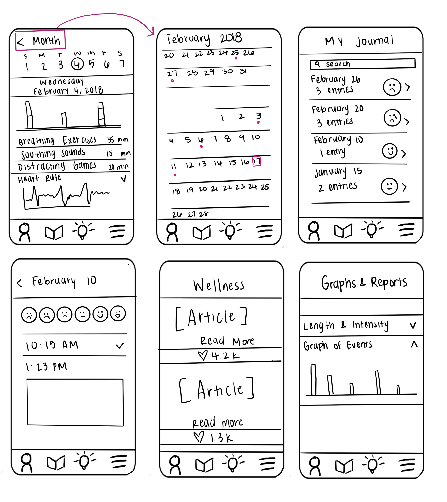
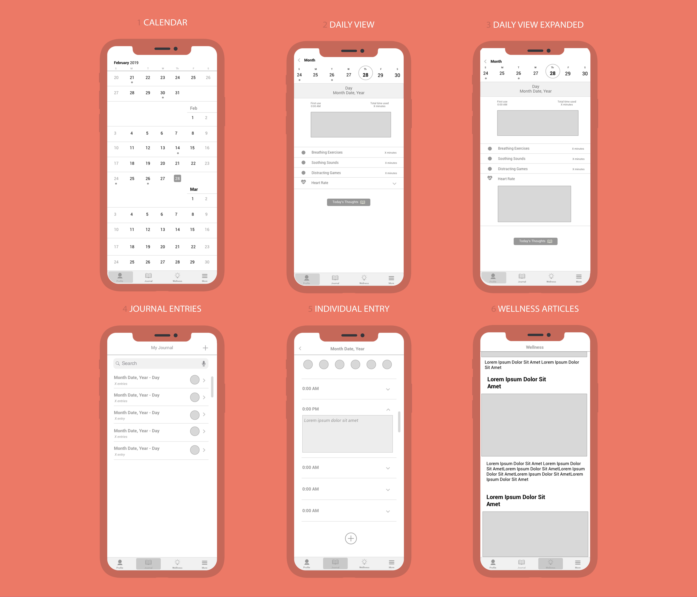
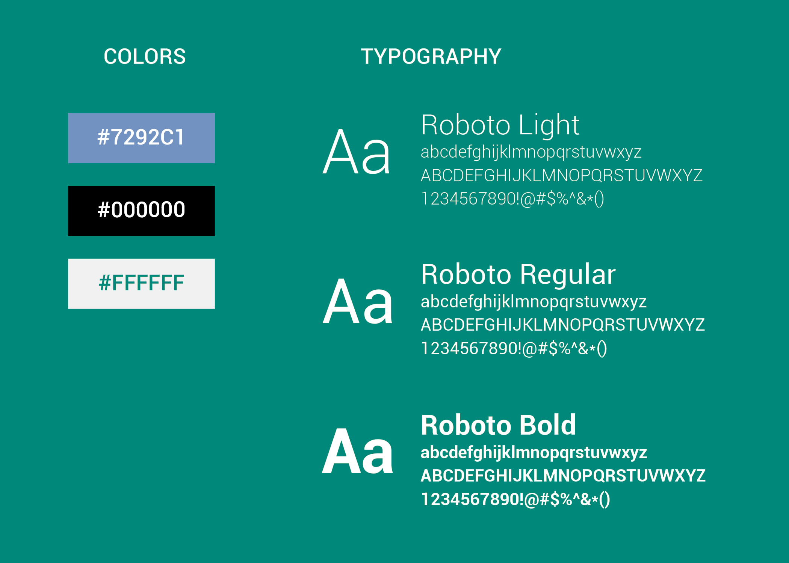
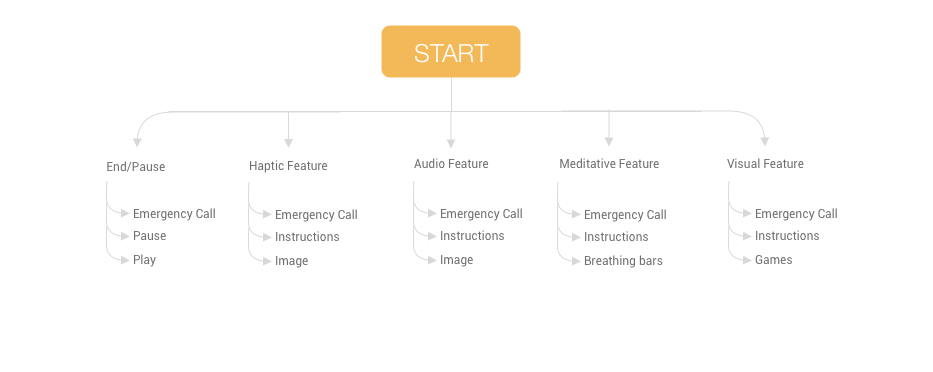
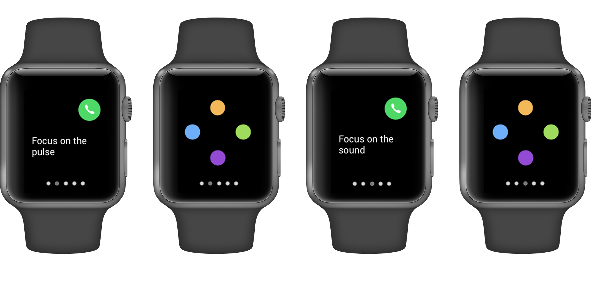
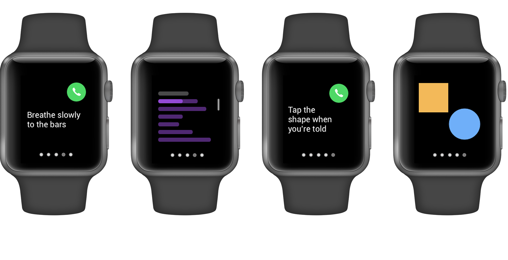
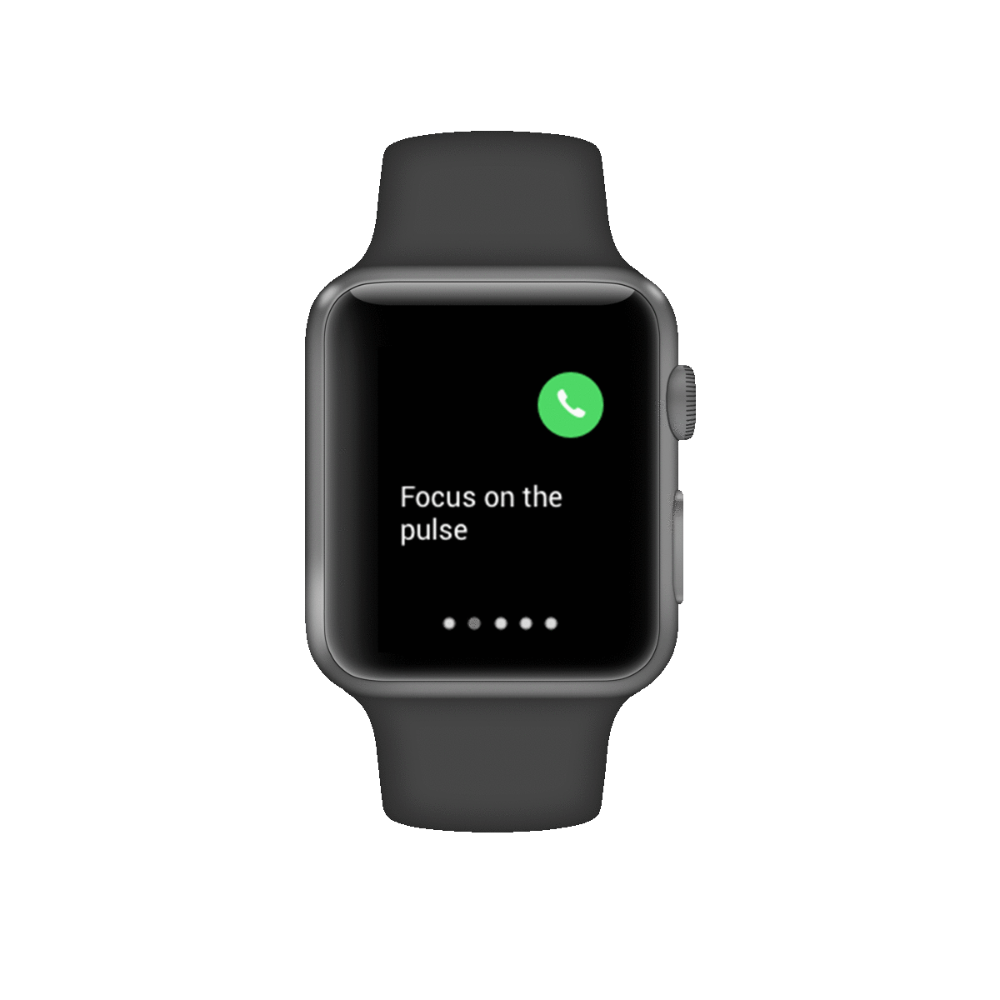
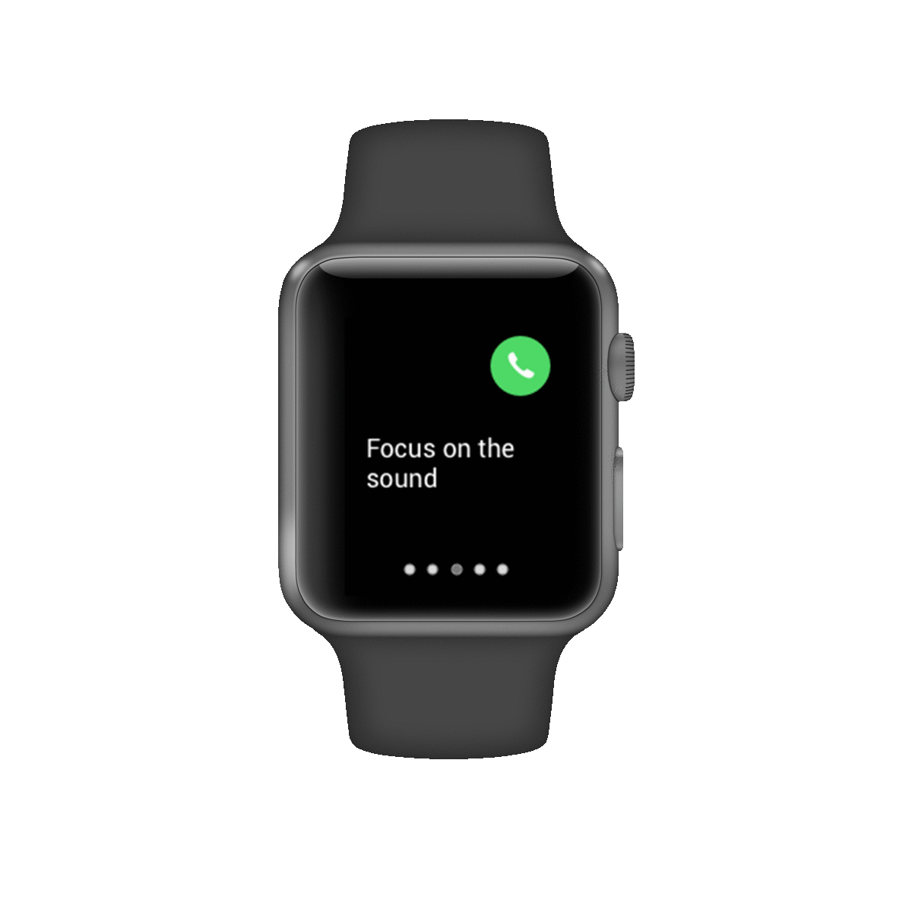
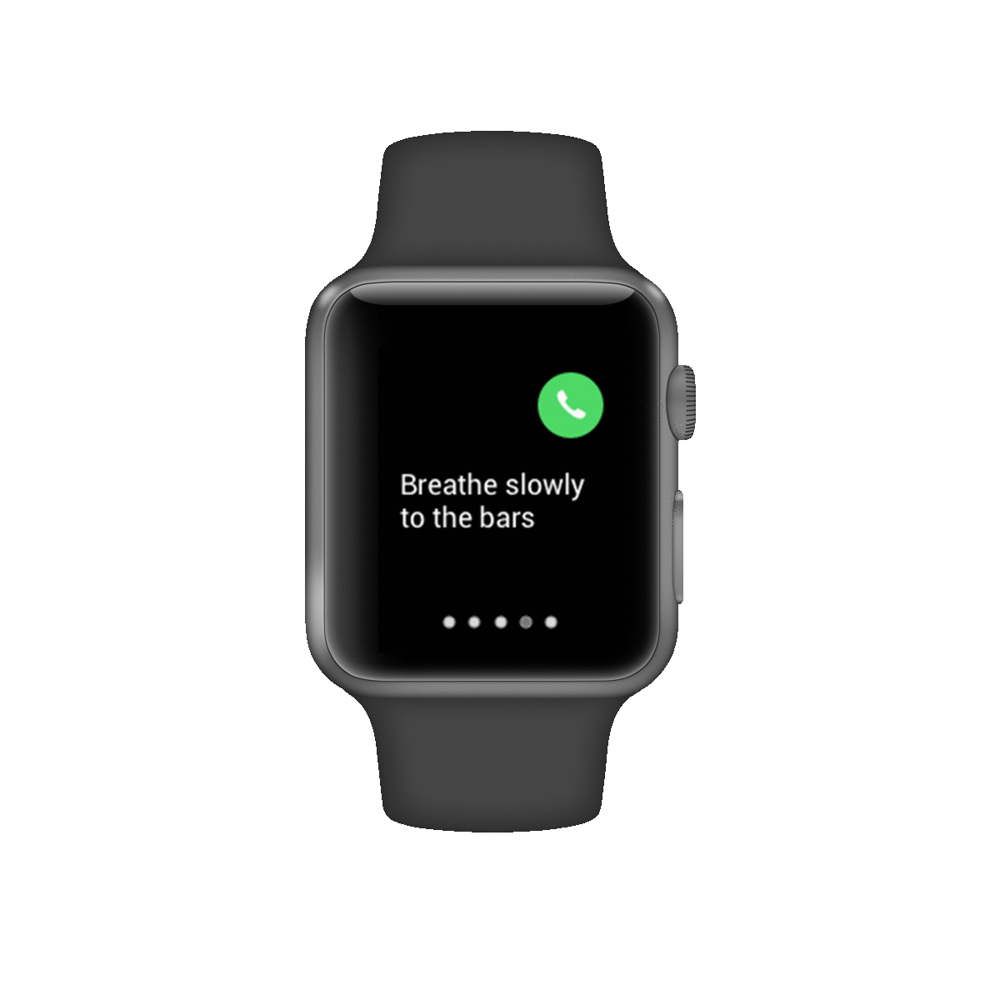
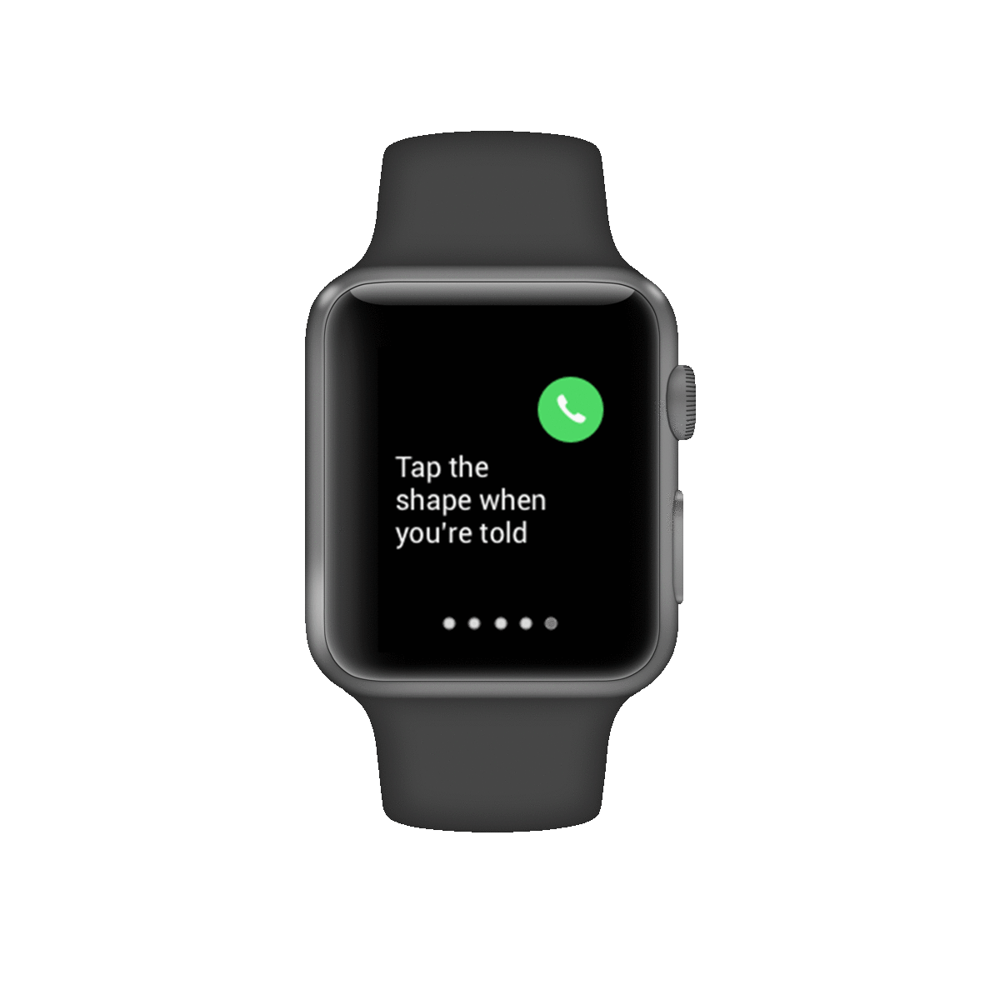

WristRecord
TIMELINE
WristRecord was created as part of a quarter-long course at the University of Washington in a four person group.
ROLE
Product Designer
User Research, Wireframing, Prototyping, User Testing
OVERVIEW
Mobile application for medical professionals to use to access medical files of the homeless population by scanning a QR code on a wearable wristband to more accurately and appropriately treat them.
PROBLEM STATEMENT
Diseases travel fast on the street and a lack of previous medical records make it difficult to properly treat homeless patients.
DISCOVER
Background
There is a distinct lack of records for a large group of people in our society, the homeless population. Our goal was to provide doctors information to efficiently treat the homeless.
This solution will not only benefit the lives of the homeless people medically, but offers them the chance to start taking care of themselves, to look for a job, to make some money, which will go towards their being able to live in a home, rather than on the streets.
User Research
Through interviews with members of the Seattle homeless population, homeless shelters, and medical professionals we found that the issue that a majority of homeless people face is health and safety. We also found out that many people are transient and have nowhere to store paperwork. People have difficulty maintaining long term care with one doctor when transient. The difficulty with storing and maintaining medical records was what we looked towards ideating a solution for.
IDEATION
Phone App Sketches
For the phone app, there needed to be functionality to set up the watch app. In order to make the phone app more functional, we added a calendar that would be able to log instances of when the watch app was used as well as a journaling feature, should users be inclined to add notes to those instances.

Phone App Wireframes

DESIGN

Apple Watch App User Flow
The flowchart for the Apple Watch app identifies the features that users may interact with. With the Apple Watch app, there are four features that pulse offers for users who are having a panic or anxiety attack. Each feature offers something different to help users in difference scenarios.

Phone App UI Screens
Focusing on the Apple Watch app, our goal was to design something that was able to provide the user as many options as possible while also being very minimal in the amount of effort needed to use. Our interviews and research showed that users wanted a solution that wouldn't be difficult to navigate, which might exacerbate their anxiety attack.





